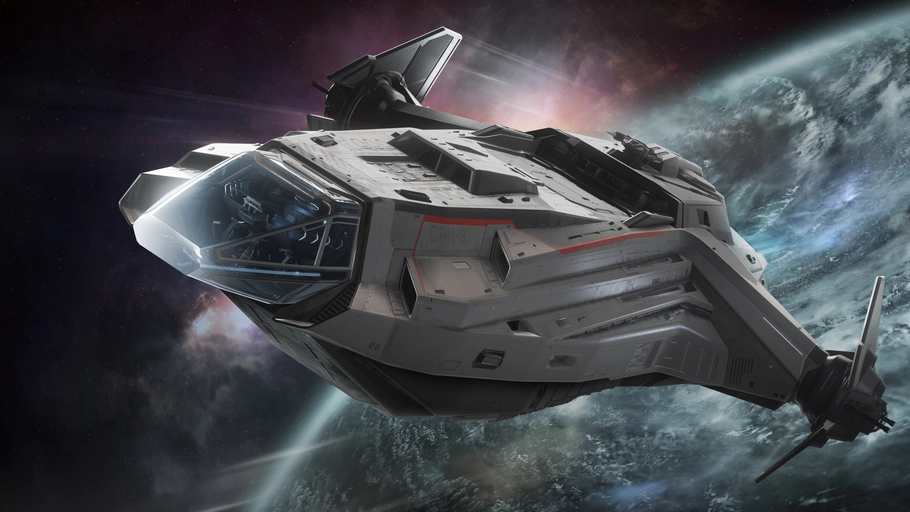
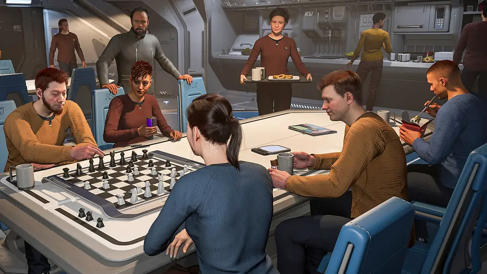
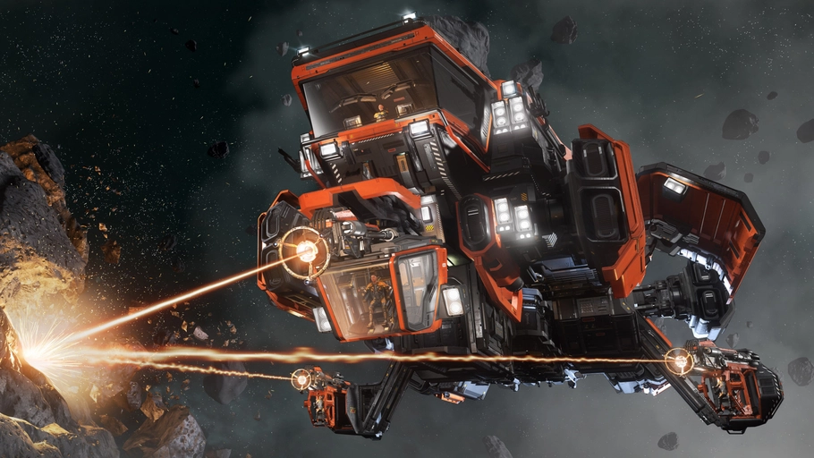
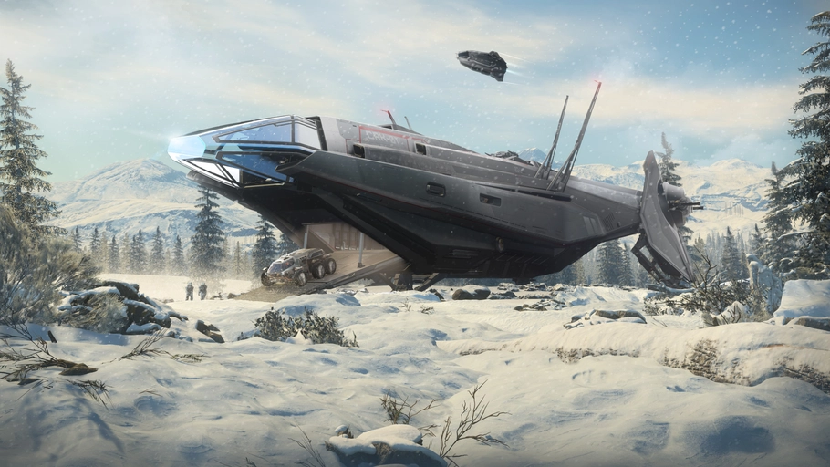

01
Piloten
Transport, Eskorte, Formationsflug oder einfach Spazierflüge durch Asteroidenfelder.
[ LISPC ] Star Citizen Organisation · DE
Proud to be lost. Eine Crew aus Piloten, Minern und Entdeckern, die gemeinsam durchs Verse fliegt und sich dabei selbst nicht zu ernst nimmt.

01 Geschichte
Es begann mit einem schlecht geplanten Flug. Ein Quantum-Sprung zu viel – und plötzlich waren wir irgendwo im Verse, ohne zu wissen, wo genau.
Statt den Kurs zu korrigieren, haben wir gemerkt: Die Leute, die sich uns anschließen, sind oft die Ruhigeren. Spieler, die Zusammenarbeit dem Rampenlicht vorziehen.
Unser Manifest02 Manifest
Wir wollen nicht die lauteste Flotte sein. Nicht die eliteste. Bei uns ist Platz für alle, die führen, die beobachten oder einfach still mitfliegen. Wir respektieren einander, lernen aus Fehlern und lachen darüber.
03 Die Crew
Egal ob du am liebsten am Steuer sitzt, Gestein knackst oder unbekannte Systeme kartierst – bei uns findest du Leute, die mitfliegen.

Transport, Eskorte, Formationsflug oder einfach Spazierflüge durch Asteroidenfelder.

Vom Multitool bis zur MOLE-Crew. Gemeinsam knacken wir jeden Brocken – und teilen den Ertrag.

Neue Systeme, versteckte Höhlen, Jump Points und Aussichten, die noch niemand fotografiert hat.
04 Charta
Respekt ist Pflicht. Toxisches Verhalten und Belästigung haben bei uns keinen Platz.
Teamwork ist die Grundlage für jeden Erfolg – egal ob beim Mining-Run oder im Dogfight.
Voice-Chat ist willkommen, aber kein Muss. Auch introvertierte Piloten gehören voll dazu.
Neue Spieler sind herzlich willkommen. Fragen sind ausdrücklich erwünscht.
Es gibt Ränge, Rollen und Divisionen. Ein Rang bedeutet Verantwortung, nicht Überlegenheit.
Strategische Entscheidungen trifft das High Command. Feedback aus der Crew ist immer willkommen.
Star Citizen ist ein Spiel. Abenteuer und Humor stehen bei uns an erster Stelle.
Gemeinsam fliegen – auch wenn wir mal vom Kurs abkommen. Proud to be lost.
05 Rekrutierung offen
Keine Mindestzeiten, kein Druck, keine Elite-Allüren. Nur eine Crew, die gemeinsam ins Unbekannte fliegt.